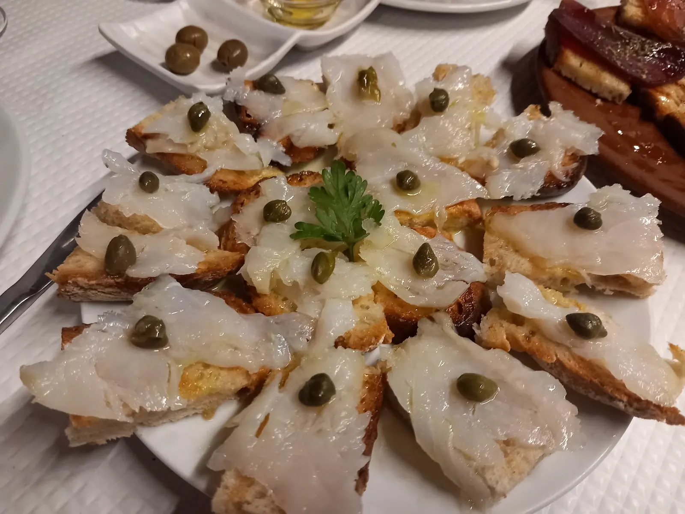
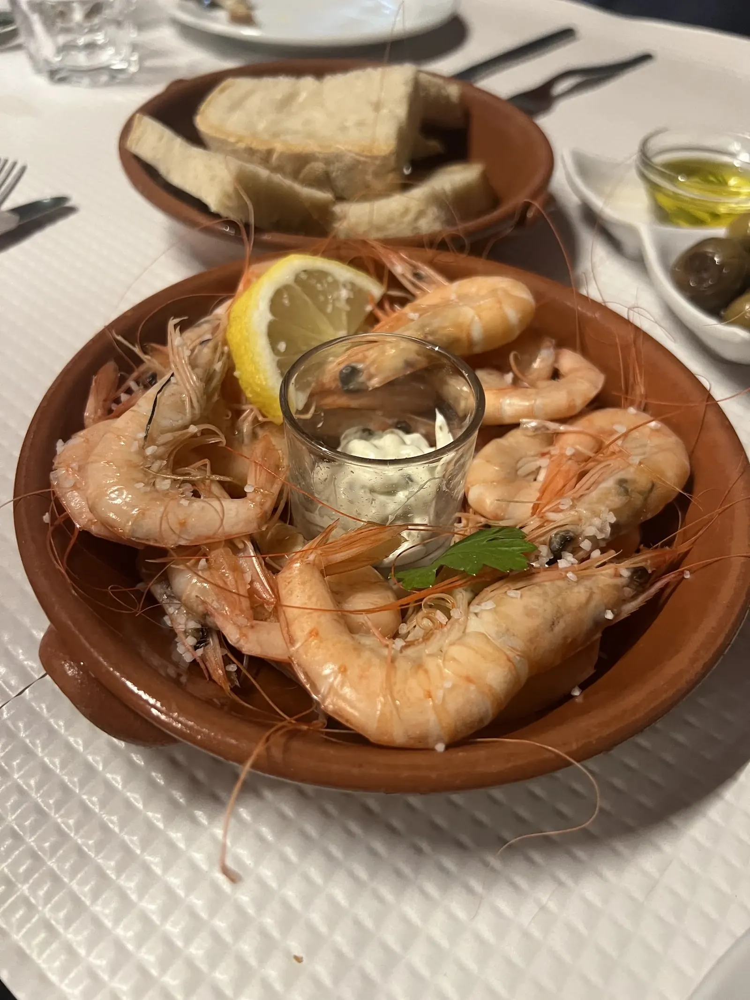
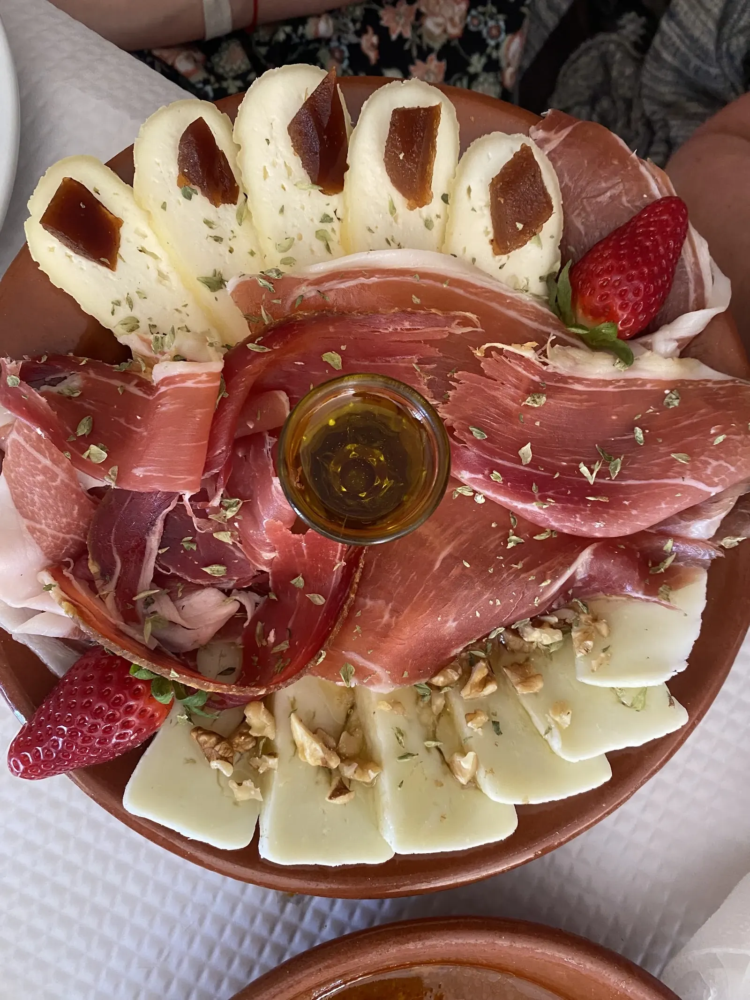
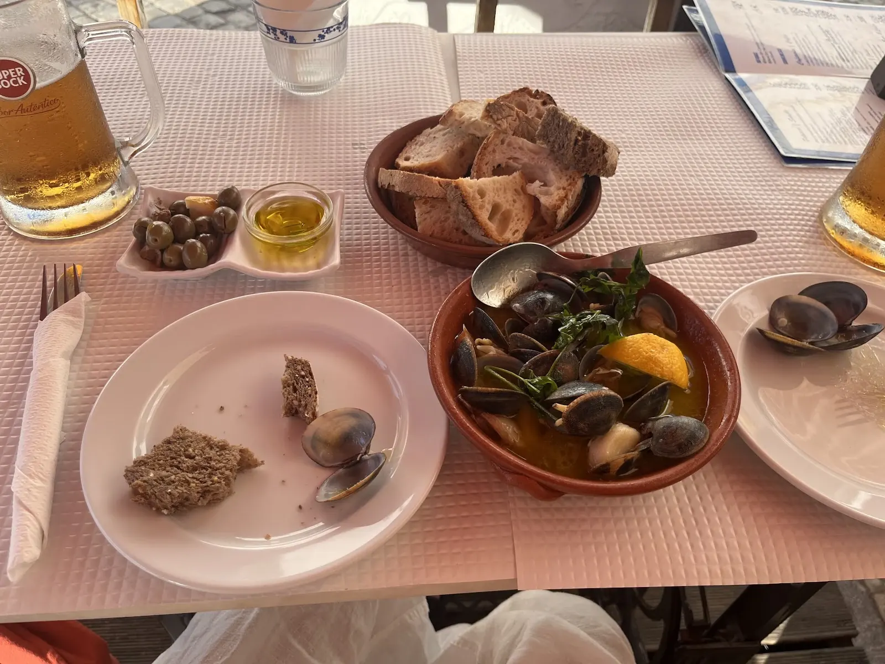
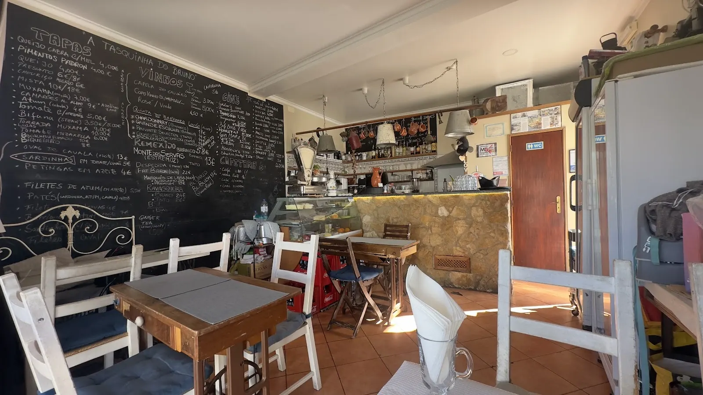
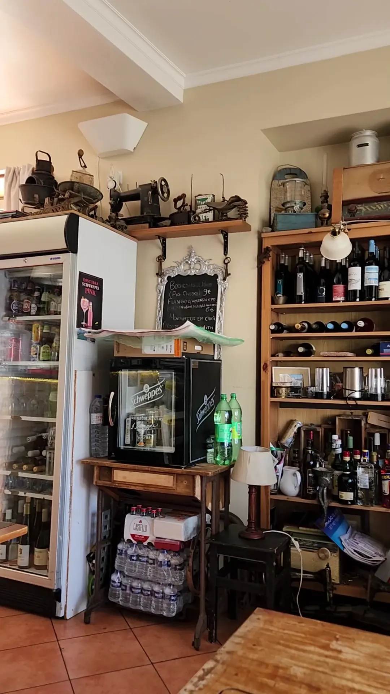
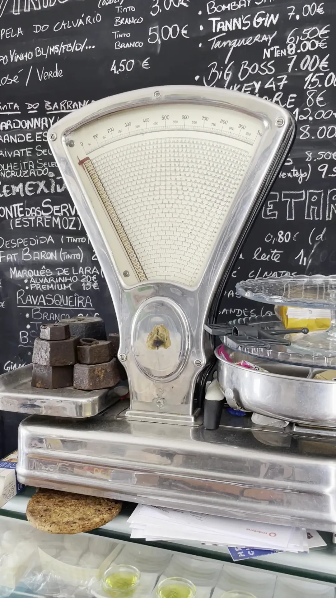

Santa Luzia · Tavira
Tasquinhado Bruno
tapas · gin · vinhos
Petiscos de quadro de giz, gins bem servidos e um terraço de madeira numa esquina da vila do polvo.Chalkboard tapas, well-poured gin and a covered wooden terrace on a corner of Portugal's octopus village.
4,7 no Google · 651 avaliaçõeson Google · 651 reviews
Do quadro para a mesaFrom the board to the table
Pede-se ao centro e partilha-seOrder for the middle and share

Bacalhau fumadoSmoked cod
Em lascas finas sobre tosta, alcaparras e azeite.Thin slices on toast with capers and olive oil.

CamarãoPrawns
No barro, com sal grosso, limão e um molho para molhar.In clay, with coarse salt, lemon and a dip.

Presunto e queijoHam and cheese
Queijo com marmelada e nozes, presunto às fatias.Cheese with quince and walnuts, sliced cured ham.

AmêijoasClams
Com pão para o molho. a confirmarWith bread for the sauce. to be confirmed
Quem lá foiWho's been
O que se diz à mesaWhat people say
4,7no Google, em 651 avaliaçõeson Google, from 651 reviews
- Muitas tapas por onde escolher, a preços que deixam pedir mais uma.Plenty of tapas to choose from, at prices that let you order one more.
- Boa escolha de vinhos e gins, servidos com cuidado.A good choice of wines and gins, poured with care.
- A sangria tinta é das coisas que mais se elogia.The red sangria is one of the most praised things here.
- Casa acolhedora e gente simpática a servir — até quem desconfiava das tapas sai convencido.A cosy place with friendly people — even tapas sceptics leave converted.
Resumo do que os clientes mais repetem nas avaliações.A summary of what guests mention most in their reviews.
Santa LuziaSanta Luzia
Porquê estes potes?Why the clay pots?
Santa Luzia é a vila do polvo. E o polvo daqui apanha-se com alcatruzes.Santa Luzia is Portugal's octopus village. And octopus here is caught with alcatruzes.
São potes de barro atados a uma corda comprida e descidos ao fundo do mar. O polvo entra para se abrigar e sobe com o pote. Pendurámo-los neste site porque não há nada mais desta terra.Clay pots tied along a long line and lowered to the seabed. The octopus moves in for shelter and comes up with the pot. We hung them across this site because nothing says this village more.
Há polvo hoje na Tasquinha? Pergunte — prato e preço a confirmarIs there octopus at the Tasquinha today? Ask — dish and price to be confirmed
CartaMenu
O quadro das tapasThe tapas board
Escolha o que quer na mesa com o +. No fim, mandamos o pedido de reserva já com as tapas por WhatsApp.Pick what you'd like on the table with +. At the end, your booking request goes by WhatsApp with the tapas listed.
TAPAS
escritas a giz, como láchalked up, like in there
Polvo de Santa LuziaSanta Luzia octopus
Não está escrito no quadro fixo. Pergunte se há hoje e como vem. a confirmarIt's not on the fixed board. Ask whether there's any today and how it's served. to be confirmed
Há polvo hoje?Octopus today?- Queijo de cabra com melGoat's cheese with honey4,00 €
- Pimentos PadrónPadrón peppers4,00 €
- QueijoCheese4,00 €
- PresuntoCured ham6 € / 8 €desde 6 €from 6 €
- Chouriço assadoFlamed chouriço6 €
- MistaMixed board10 € / 18 €desde 10 €from 10 €
- Muxama com orégãosMuxama (cured tuna) with oregano7,00 €
- Camarões ao alhoGarlic prawns9 €
- AzeitonasOlives2,50 €
- Atum com cebolaTuna with onion4 €
- Tomate com orégãosTomato with oregano5,00 €
- BifanaBifana (pork steak)3,50 € / 5,00 €desde 3,50 €from 3.50 €
- Torrada de muxamaMuxama on toast9,00 €
- LulasSquid10,00 €
- Tomate e mozarelaTomato and mozzarella6,00 €
- Bacalhau fumadoSmoked cod10 €
- BiqueirãoAnchovies8 €
- Ovas de cavala em azeiteMackerel roe in olive oil13 €
- Sardinhas em tomate ou limãoSardines in tomato or lemon5 €
- Petingas em azeiteBaby sardines in olive oil4 €
- Filetes de atum em azeiteTuna fillets in olive oil5,50 €
- Patés de sardinha, atum ou cavalaSardine, tuna or mackerel pâtéa confirmarto confirm
- Bochechas de porcoPork cheeks9 €
- Frango com mostarda e melChicken with mustard and honey6 €
- Mozarela em carilCurried mozzarellaa confirmarto confirm
Preços indicativos, em euros, com IVA. O quadro muda: confirme na casa o que há no dia.Indicative prices in euros, VAT included. The board changes: check on the day what's available.
Gin
Uma das razões para vir. Uma seleção do quadro:One of the reasons to come. A selection from the board:
- Tanqueray6,50 €
- Tann's7,00 €
- Big Boss7,00 €
- Gin Mare8,00 €
- Bulldog8,00 €
- Tanqueray Nº Ten8,00 €
- Sharish (Alentejo)9,50 €
- Gin Sul12,00 €
- Monkey 4715,00 €
VinhosWine
A copo e à garrafa, muito Alentejo e Algarve.By the glass and by the bottle, lots of Alentejo and Algarve.
- Copo Capela do Calvário tinto ou brancoGlass of Capela do Calvário red or white3,00 €
- Copo de rosé ou verdeGlass of rosé or vinho verde4,50 €
- Monte das Servas (Estremoz)13 €
- Despedida tintored13 €
- Marquês de Lara Premium15 €
- Marquês de Lara Alvarinho20 €
- Fat Baron tintored22 €
- Ravasqueira branco / tintowhite / red24 € / 26 €
- Quinta do Barranco Longo (Algarve)a confirmarto confirm
E aindaAnd also
Para quem não vai de gin.For the non-gin crowd.
- Sangria tintaRed sangriaa confirmarto confirm
- Caipirinha5 €
- Aperol Spritza confirmarto confirm
- CaféEspresso0,80 €
- ChásTeasa confirmarto confirm
Monta a tua mesaBuild your table
Reserve com as tapas já escolhidasBook with your tapas already picked
Diga quantos são, o dia e a hora. Abrimos o WhatsApp com a mensagem pronta — é só carregar em enviar. A casa responde a confirmar a mesa.Tell us how many, the day and the time. WhatsApp opens with the message ready — just press send. The house replies to confirm your table.
Prefere falar? Ligue para o 918 876 304.Rather talk? Call +351 918 876 304.
A casaThe place
Uma tasca cheia de coisas com históriaA tasca full of things with a past
Balanças de pratos, máquinas de costura, candeeiros a petróleo. Nada disto está cá por decoração de catálogo.Pan scales, sewing machines, oil lamps. None of it came from a décor catalogue.

Entra-se e a primeira coisa que se vê é a parede: tapas, vinhos, gins e cafetaria, tudo escrito à mão.Walk in and the first thing you see is the wall: tapas, wines, gins and coffee, all handwritten.
As mesas assentam em pés de ferro de máquinas de costura antigas. O balcão é de pedra, com a vitrine dos petiscos e panelas de cobre penduradas por cima. Há pouca coisa nova e ainda bem.Tables sit on cast-iron bases from old sewing machines. The bar is stone, with the tapas counter and copper pots hanging above. Not much here is new, and that's the point.
Lá fora, o terraço de madeira tem cobertura e chapéus: é onde se fica quando o fim de tarde de Santa Luzia está bom — quase sempre.Outside, the wooden terrace is covered and shaded: it's where you sit when the Santa Luzia evening is nice — which is most of the time.
A balança do balcãoThe counter scale
Uma balança antiga de mostrador, com pesos de ferro ao lado.An old dial scale, with iron weights beside it.
As máquinas SingerThe Singer machines
Pés de máquinas de costura feitos mesa. E uma ou outra máquina inteira na prateleira.Sewing-machine bases turned into tables. And the odd whole machine up on a shelf.
A garrafeiraThe bottle wall
Estantes de madeira cheias de tintos, brancos e gins por abrir.Wooden shelves full of reds, whites and gins waiting to be opened.


Onde ficaWhere it is
Santa Luzia, a três quilómetros de TaviraSanta Luzia, three kilometres from Tavira
Vila de pescadores na Ria Formosa, conhecida em todo o país pelo polvo. A Tasquinha está numa esquina da Rua Marechal Gomes da Costa, entre casas caiadas e calçada.A fishing village on the Ria Formosa, known across Portugal for its octopus. The Tasquinha sits on a corner of Rua Marechal Gomes da Costa, among whitewashed houses and cobblestones.
GaleriaGallery
À mesa e à portaAt the table, at the door
Toque numa foto para a ver maior.Tap a photo to see it larger.
VisitarVisit
Numa esquina de Santa LuziaOn a corner of Santa Luzia
Abre ao meio-dia. Ao fim de semana e no verão, vale a pena reservar.Opens at noon. At weekends and in summer, it's worth booking.
- MoradaAddressRua Marechal Gomes da Costa, 5
8800-546 Santa Luzia, Tavira - TelefonePhone918 876 304
- HorárioHoursAbre às 12:00. Dias de descanso e hora de fecho a confirmarOpens at 12:00. Closing days and closing time to be confirmed
- ReservasBookingsPor telefone ou WhatsApp, com as tapas escolhidas na carta.By phone or WhatsApp, with your tapas picked on the menu.
- PagamentoPaymenta confirmarto be confirmed
O mapa carrega do Google só quando tocar.The map loads from Google only when you tap.